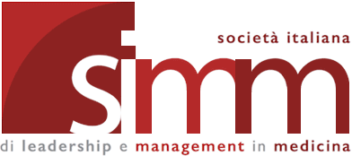

Master Universitario di II livello in Governance e Innovazione dei Servizi Sanitari
Governance and Innovation in Healthcare Services
Formare chi governa i sistemi sanitari complessi
Il master si propone di formare professionisti capaci di governare e gestire sistemi sanitari complessi, operando tra sanità, amministrazione pubblica e management.
Sviluppa competenze strategiche, organizzative e manageriali: governance e architettura dei sistemi, economia della salute e value-based healthcare, innovazione digitale e uso dei dati, qualità e sostenibilità dei servizi, leadership e change management.
Quattro buone ragioni, più una formula pensata per chi lavora
Dati per decidere
Sistemi informativi, data quality, interoperabilità e AI a basso rischio e alto impatto.
Valore e sostenibilità
Cost-effectiveness, HTA, budget impact e value-based healthcare con PROMs e PREMs.
Ospedale e territorio
Integrazione tra primary care e ospedale nel quadro del DM 77/2022, prevenzione e PDTA.
Leadership del cambiamento
Gestione delle persone, change management, relazioni sindacali e comunicazione di crisi.
Formula weekend
Venerdì e sabato, in aula e online, per conciliare il master con il lavoro.
Per chi vuole ruoli di coordinamento e innovazione
Il master è pensato per professionisti di aziende sanitarie, ospedali, IRCCS e amministrazioni pubbliche, con competenze cliniche o amministrative, che vogliono ruoli di coordinamento e innovazione organizzativa e digitale.
Dopo il master: quattro aree di competenza in uscita
Governance e programmazione
Guidare e valutare l'organizzazione dei servizi sanitari.
Valutazione e HTA
Misurare valore, esiti e sostenibilità economica.
Dati e innovazione digitale
Usare dati e AI a supporto delle decisioni.
Qualità e cambiamento
Migliorare i processi e guidare le persone.
Il master in sintesi
Dal 1 aprile 2027 al 31 marzo 2028
In modalità mista: in aula e online. Venerdì 9–18 e sabato 9–13. Frequenza minima richiesta: 75%.
- Lezioni e laboratori
- Seminari con professionisti
- Stage e project work
- Prova finale
Insegnamenti
Stage e tesi
Un periodo di stage e project work in azienda sanitaria, per applicare sul campo quanto appreso.
Stage e project work
12 CFU · 300 ore
Tutor
Michele Castelli
Prova finale
3 CFU
Chi guida il master
Requisiti, contributo e selezione
Requisiti: laurea magistrale. Luogo: Università di Milano-Bicocca.
Sconto del 10%
Sconto del 15%
Un posto per ciascuna azienda: IRCCS San Gerardo dei Tintori (Monza), ASST Papa Giovanni XXIII (Bergamo), ASST Lecco, ASST Brianza, ASST Niguarda (Milano), ASST Nord Milano.
1 posto gratuito
Selezione
Valutazione del CV (10/30) e colloquio (20/30). Colloqui l'11 marzo 2027.
Bando in pubblicazione a breve.
Scarica la brochure
Tutte le informazioni sul master in un unico PDF.
Scrivici per essere ricontattato con maggiori informazioni
Sede
BReCHS · Edificio U7Piazza dell'Ateneo Nuovo 1
20126 Milano
